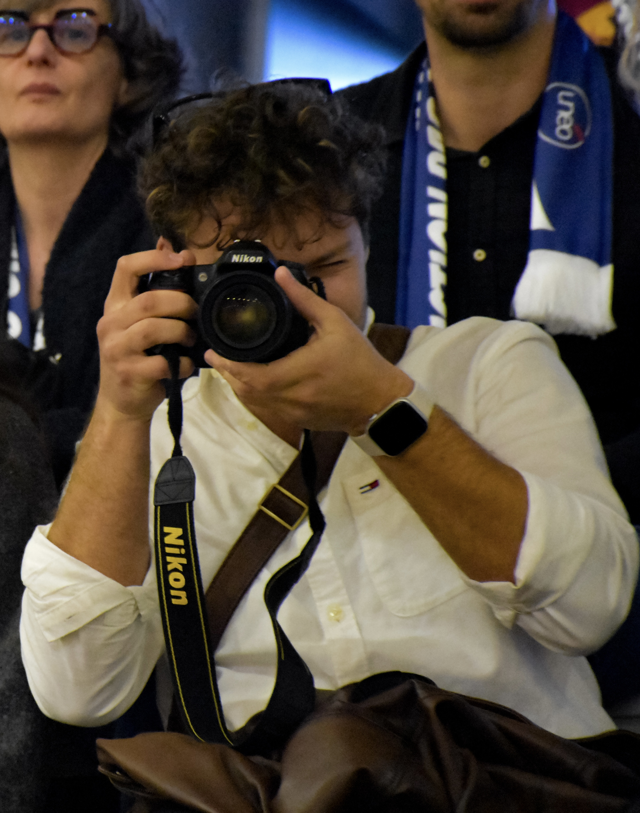

— Intégrateur Multimédia & Designer
Concepteur visuel et intégrateur multimédia, je façonne des expériences numériques à la croisée du design, du motion et de la pédagogie. Du pixel à l'interaction, chaque projet est une marée qui façonne son rivage.

// À propos
J'ai 20 ans et je navigue entre deux mondes complémentaires : la création visuelle et l'ingénierie pédagogique. Diplômé d'un BUT MMI à Elbeuf–Rouen, je poursuis aujourd'hui un Bachelor Webmarketing & Social Media à MyDigitalSchool (Caen).
En parallèle, je mets mes compétences au service de l'École des Spécialités du Commissariat des Armées en tant qu'intégrateur multimédia au sein de la cellule pédagogique — un terrain d'application unique où la créativité rencontre la rigueur.
// Compétences
De la captation au rendu final, je maîtrise l'intégralité de la chaîne de création — du motion design à l'architecture de modules pédagogiques interactifs.
Narration visuelle et rythme. Du rush brut au master final, chaque coupe est une décision créative.
Donner vie aux idées par le mouvement. Animation, compositing et expressions pour des visuels qui ne laissent pas indifférent.
Identité visuelle, typographie et composition. Des créations qui communiquent avant même d'être lues.
Stratégie digitale, acquisition et analyse de performances pour des campagnes engageantes et mesurables.
Création de contenus et messages clairs pour renforcer la présence de marque et la qualité des relations publiques.
Capturer la lumière, figer l'instant. Un œil formé à la composition et à la narration photographique.
// Projets
— J'ai attisé votre curiosité ?
Vous avez un projet créatif, un module à concevoir, une vidéo à monter ? Parlons-en autour d'un café virtuel.